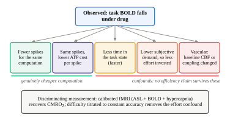
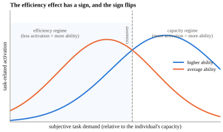
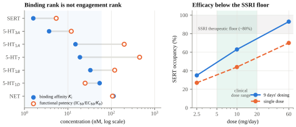
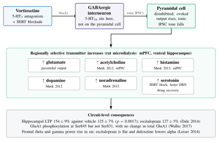
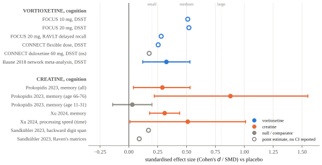
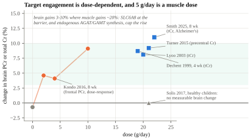
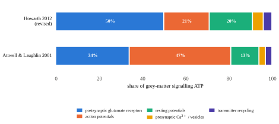
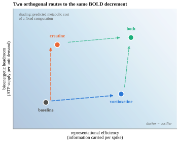
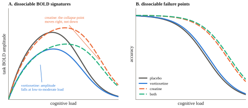

The claim I want to test is not that vortioxetine and creatine raise g. It is that they move a brain along the two coordinates that the neuroimaging literature has been calling "neural efficiency" all along, and that they move along different ones. Vortioxetine, if the preclinical circuit story is right, changes how much information a cortical circuit carries per spike. Creatine changes how much ATP the brain can deliver per unit of demand. Those are orthogonal quantities. Both of them, pushed in the right direction, produce a lower task-evoked BOLD response. Neither of them, on its own, licenses the inference that the person doing the task has become smarter. What follows is the mechanistic case for each route, the reason the two should not be conflated, and the experiment that would tell them apart.
Section oneWhat a reduced BOLD signal actually is, and the five things it can mean
The BOLD signal is not a measurement of neural activity. It is a measurement of deoxyhaemoglobin concentration, which is a function of cerebral blood flow, cerebral blood volume and the cerebral metabolic rate of oxygen consumption. A positive BOLD response happens because CBF overshoots CMRO2, and the ratio of those two responses is not a constant. Buxton and colleagues (2014) demonstrated exactly how badly it misbehaves: under caffeine, baseline CBF fell 25 per cent, baseline CMRO2 rose, the absolute CMRO2 response to visual stimulation rose 60 per cent, and the BOLD response did not change at all. In the same body of work, a stimulus contrast manipulation produced BOLD modulation roughly twice the size of the underlying metabolic change, while an attention manipulation produced large CMRO2 amplification with almost no BOLD change. A signal that can overshoot by a factor of two in one condition and sit flat through a 60 per cent metabolic change in another cannot be read as a linear meter of neural work.
So when a drug lowers task BOLD, there are five live explanations, and only two of them are about cognition getting cheaper.

I want to be exact about the last box, because it is the one that could sink the whole thesis and it recurs for both compounds. Vortioxetine is a 5-HT1B partial agonist and a 5-HT1D antagonist. 5-HT1B/1D are the triptan receptors, the principal mediators of cerebral and meningeal vasoconstriction. A 2025 pharmacological MRI study found that citalopram 20 mg produced significant arterial-spin-labelling CBF reductions in hippocampus, amygdala and insula that tracked 5-HT1A and 5-HT4 receptor density, while producing no significant effect on resting BOLD fluctuations. That is precisely the dissociation that would manufacture a spurious efficiency effect in a task-BOLD contrast. There is, to my knowledge, no published human ASL, PET-CBF or CMRglc study of vortioxetine at all. Hold that thought; it returns in section nine.
Section twoNeural efficiency is a real effect whose sign flips
The hypothesis starts with Haier's PET work. In the 1988 study, cortical glucose metabolic rate correlated negatively with Raven's performance, with regional coefficients reported between −0.72 and −0.84. The more interesting result is the 1992 Tetris study: after four to eight weeks of daily practice, whole-cortex glucose metabolic rate fell from 39.2 to 28.8 µmol/100g/min, a drop of about a quarter, while task performance rose more than sevenfold, and the participants who improved most showed the largest metabolic decreases. Learning makes a computation cheaper. That much is solid and it is the durable core of the hypothesis.
What is not solid is the leap from there to "high-g brains use less energy." The decisive counter-experiment is Larson and colleagues (1995), who scanned 14 high-Raven and 14 average-Raven men on a backwards digit-span task adaptively titrated to 90 per cent and 75 per cent accuracy. When difficulty was equated to ability instead of held objectively constant, the sign reversed: the high-ability group showed higher cortical metabolic rates (Group × Condition F(1,26) = 7.04, p = .013). The original inverse correlations were, at least partly, an artefact of able people finding the standard task easy.

Basten, Stelzel and Fiebach (2013) sharpen the picture further. In 52 participants across an IQ range of 77 to 139, higher intelligence predicted stronger task-positive network activation (F(1,50) = 4.29, p = .044) and less effort needed to suppress the default mode network (F(1,50) = 8.87, p = .004). Efficiency lived in the task-negative network; capacity lived in the task-positive one. And at scale, the network-topology version of the story collapses: Metzen et al. (2024), pooling four datasets and more than 2,000 participants, found no reliable association between global efficiency or small-world propensity and intelligence, with global clustering managing r ≈ 0.10. The n = 19 path-length results do not replicate.
Barbey's (2018) network neuroscience theory is the framing I find most useful, because it dissolves the efficiency-versus-capacity argument rather than picking a side. Crystallised ability draws on easy-to-reach network states; fluid ability requires driving the network into difficult-to-reach states. Cheap access to easy states looks like efficiency. The ability to reach expensive states looks like capacity. They are two regimes of one control problem, and which one you observe is set by where the task sits relative to the person.
Why this matters for the drug argument
If "neural efficiency" has a sign that flips with subjective demand, then a drug that lowers BOLD is not thereby doing something g-like. It is only doing something g-like if it lowers BOLD in the efficiency regime while preserving or extending performance in the capacity regime. That is a two-part, falsifiable prediction, and it is different for the two compounds. It is the whole argument of this report.
Section threeVortioxetine's mechanism is disinhibition, and disinhibition is a signal-to-noise operation
Start with the pharmacology, because the usual receptor table is misleading. Vortioxetine's binding affinities run SERT 1.6 nM, 5-HT3A 3.7, 5-HT1A 15, 5-HT7 19, 5-HT1B 33, 5-HT1D 54 and NET 113 (Bang-Andersen 2011; Mørk 2012). Functional potency does not follow that order. 5-HT7 has a respectable Ki of 19 nM but a functional Kb of 450 nM, a 24-fold gap, and 5-HT1B intrinsic activity falls from 55 per cent to 22 per cent depending on assay coupling.

What is confidently engaged at 5 to 20 mg is SERT inhibition and 5-HT3 antagonism. And 5-HT3 antagonism is the interesting one, because of where the receptor sits.

This is why the compound is not just an SSRI with extra receptors. An SSRI raises 5-HT everywhere, and a good deal of that extra 5-HT lands on 5-HT3 receptors on GABAergic interneurons, which increases inhibitory tone on pyramidal cells. Vortioxetine raises 5-HT and simultaneously blocks the receptor through which the increase would otherwise suppress pyramidal output. The net effect is regionally selective disinhibition rather than global excitation, and the difference between those two matters enormously for the efficiency argument.
The downstream transmitter increases follow from that disinhibition. Mørk et al. (2012) showed dose-dependent increases in 5-HT, dopamine and noradrenaline in medial prefrontal cortex and ventral hippocampus, including at subchronic doses giving only 41 per cent rat SERT occupancy. Mørk et al. (2013) added acetylcholine and histamine in mPFC at 1 to 10 mg/kg. Pehrson et al. (2013) is the source of the "regionally selective increases in multiple neurotransmitters" framing.
I should flag the weakest link honestly. Pehrson et al. (2016) found the acute hippocampal ACh rise to be modest and short-lived, found no change in basal hippocampal ACh with subchronic dosing, and found that vortioxetine failed to reverse scopolamine-induced attention deficits. The cholinergic claim is real in prefrontal cortex and thin in hippocampus, and reviews tend to blur that.
A second flag, on the oscillations. The rodent story does not translate. Leiser (2014) and Dale (2014) report increased frontal theta and gamma in rat, but the only human EEG study, Nissen, Gram and colleagues (2020, four-way crossover in 32 healthy men across vortioxetine 10 mg, 20 mg, escitalopram 15 mg and placebo), found decreased resting theta, increased beta, and an effect profile broadly indistinguishable from an SSRI. Anyone leaning on theta as the translational bridge is leaning on rodent data that the human recording contradicts, and Figure 4 should be read with that in mind.
Section fourWhy acetylcholine, histamine and glutamate are the pro-cognitive three
The reason these three transmitters matter is not that they are "activating." Noradrenaline is activating. Caffeine is activating. What distinguishes these three is that each one, in the right regime, changes the ratio of task-relevant to task-irrelevant activity rather than scaling both together.
Acetylcholine: raise the signal, suppress the echo
The computational account, developed by Hasselmo and consolidated in Hasselmo and Sarter (2011), is asymmetric modulation. Nicotinic receptors on thalamocortical terminals enhance glutamatergic transmission at feedforward afferent synapses, so new evidence from the world is weighted more heavily. Presynaptic muscarinic receptors simultaneously produce heterosynaptic inhibition of glutamate release at recurrent excitatory synapses: CA3 associational fibres, piriform layer Ib, intracortical layer II/III collaterals. The numerator rises and the denominator falls. This is signal-to-noise in the strict sense, and the component being suppressed is self-sustaining internally generated spiking, which costs energy without carrying new information.
The empirical texture is good. Parikh et al. (2007), recording prefrontal cholinergic transients at sub-second resolution in rats doing a cued detection task, found that detected cues evoked transients and missed cues evoked none; a 1 µM increase in the choline signal predicted a 1.75 s reduction in response latency; and slow tonic changes correlated with transient amplitude at r = 0.72, meaning tonic ACh sets the gain on the phasic detection signal. Parikh et al. (2010) dissociated the receptor families: β2*-containing receptors control transient amplitude, α7 controls duration.
And here is the finding that makes the whole efficiency argument non-hypothetical. Furey et al. (2008) gave ten healthy volunteers a parametric delayed match-to-sample task at delays of 1, 6, 11 and 16 s under saline and under intravenous physostigmine. Under saline, prefrontal rCBF scaled systematically with delay, which is the normal difficulty-recruitment pattern. Under physostigmine, reaction time fell and prefrontal rCBF fell selectively at the longest delays, abolishing the correlation between task delay and prefrontal rCBF entirely. A cholinergic drug did not add activation. It removed the activation that difficulty would otherwise have demanded. That is the closest thing in the human literature to a proof of concept that a neuromodulator can move a healthy brain along the efficiency axis rather than the arousal axis.
Histamine: necessary, and by itself not sufficient
All CNS histamine originates in the tuberomammillary nucleus and projects diffusely. H1 blocks leak potassium conductances and depolarises cortical pyramidal cells; H2 reduces the calcium-activated afterhyperpolarisation, raising firing gain. H3 is the interesting one: a constitutively active Gi/o receptor acting both as an autoreceptor on histaminergic terminals and as a heteroreceptor on cholinergic, noradrenergic, dopaminergic and glutamatergic terminals. Blocking H3 therefore disinhibits histamine release and cortical ACh release, converging on the mechanism above. Ciproxifan in cats suppressed 0.8 to 5 Hz slow activity and spindles, markedly increased 25 to 45 Hz fast rhythms, and improved five-choice accuracy specifically at the hardest stimulus duration (Ligneau 1998).
The clinical record is where the caution comes from. Pitolisant is approved for narcolepsy, so the arousal effect is real. The cognition programmes are a graveyard: ABT-288 failed in Alzheimer's disease and produced psychosis in schizophrenia; MK-0249 failed; GSK239512 moved episodic memory only. Nishii et al. (2025), pooling 11 RCTs and 754 participants, found no cognitive benefit for the class, with the only positive signal from betahistine (composite SMD −0.61, 95% CI −1.03 to −0.18). The converse evidence is everyday and strong: H1 antagonists reliably impair cognition.
I take the lesson to be specific and important for this report's thesis: global, tonic elevation of an arousal transmitter reliably produces wakefulness and unreliably produces cognition. Whatever is pro-cognitive about vortioxetine's histaminergic effect cannot be the histamine per se. It has to be that the histamine rise is regional and permissive of phasic signalling rather than a tonic ceiling.
Glutamate: the narrowest window of the three
Glutamate is where the inverted U is sharpest in both directions. On the left arm, Wang et al. (2013) recorded primate dlPFC Delay cells and found NMDA antagonism reduced delay firing in 14 of 15 cells against AMPA antagonism in 10 of 16, with substantially greater maximum reduction; NR2B in dlPFC sits exclusively within the postsynaptic density, unlike sensory cortex; and their model showed that reducing NMDAR conductance to 70 per cent of control produced near-complete loss of network persistent firing. A 30 per cent reduction is catastrophic. On the right arm, Yizhar et al. (2011) showed optogenetically that elevating cortical E/I ratio degrades information processing, with partial rescue by co-elevating inhibition, and beyond that lies frank excitotoxicity. The ampakine programmes, which were the direct pharmacological test of "just add glutamatergic drive," returned inconsistent-to-negative clinical results inside a window bounded by seizure risk.
The mediating variable is oscillatory. Glutamatergic drive onto fast-spiking parvalbumin interneurons generates the PING loop that produces gamma, and Sohal et al. (2009) showed optogenetically that gamma-frequency modulation of excitatory input enhances cortical signal transmission by reducing circuit noise and amplifying circuit signals. Same currency as acetylcholine, different door.
The human correlational data points the same way. Marsman et al. (2017), using 7T MRS, found the prefrontal GABA/glutamate ratio correlated r = −0.80 (p = 0.01) with working memory index, and occipital glutamate concentration r = −0.79. Take the first coefficient with care: the study enrolled 23 adults but that correlation carries df = 7, so it rests on about nine of them, and an r of that size on nine subjects is a fragile estimate. The direction is what I am relying on, not the magnitude. Better performers did not have more glutamate. They had a more favourable excitation-inhibition balance.
The through-line
Each of the three works by changing what fraction of cortical spiking is task-relevant. Acetylcholine does it by suppressing recurrent transmission while enhancing afferent transmission. Glutamate does it through PV-mediated gamma, which is a temporal sorting mechanism. Histamine does it by permitting the other two. None of them works by making the cortex uniformly more active, and the histamine trial record is the empirical proof that uniform activation does not buy cognition.
Section fiveWhat the vortioxetine cognition data will and will not carry
The FOCUS trial (McIntyre 2014, n = 602) gave a DSST effect of d = 0.51 at 10 mg and d = 0.52 at 20 mg, with RAVLT delayed recall at 0.31 and 0.28, and a path analysis attributing 66 and 56 per cent of the DSST effect to a direct route rather than a mood-mediated one. CONNECT (Mahableshwarkar 2015, n = 602) gave a smaller DSST effect, d = 0.254, p = 0.019, with duloxetine 60 mg failing to separate from placebo (d = 0.176, p = 0.099) and a path analysis attributing 75.7 per cent of vortioxetine's effect to the direct route against 48.7 per cent for duloxetine. Baune's network meta-analysis (2018, 12 RCTs, 3,738 patients) found vortioxetine the only antidepressant significantly superior to placebo on DSST, SMD 0.325 (95% CI 0.120 to 0.529).

Now the part that the enthusiast literature skips. The path analyses are structural equation models fitted to trial data, not experimental dissociations. Nothing in FOCUS or CONNECT manipulated mood and cognition independently. Baune's own 2018 trial in employed MDD patients found vortioxetine, paroxetine and placebo indistinguishable on DSST. Nierenberg et al. (2019) found no treatment differences in remitted patients with residual cognitive symptoms. Vieta et al. (2018) found no significant separation from escitalopram. CONNECT's RAVLT and Stroop outcomes were null even while its DSST outcome was positive. And the regulator did not buy it: the FDA advisory committee voted 8 to 2 in favour in 2016, the FDA declined the cognition indication, and the 2018 label revision states that the DSST effects "may reflect improvement in depression" and that no comparative advantage over other antidepressants has been demonstrated.
The imaging result that motivates this whole report is Smith et al. (2018, Molecular Psychiatry): 96 participants, 48 in remitted MDD and 48 healthy controls, randomised to vortioxetine 20 mg or placebo for a fortnight, scanned on an N-back. BOLD fell in right dlPFC (Z = 3.34, p = 0.030) and left hippocampus (Z = 3.72, p = 0.029). N-back accuracy did not change. Trail Making A and B improved (p = 0.01 and p = 0.02); DSST and RAVLT were null in this healthy-weighted sample. The authors interpreted the pattern as increased neural efficiency and noted it runs opposite to the BOLD increases seen in depressed patients who maintain performance.
Note what that study is and is not. It is a real, adequately powered, placebo-controlled demonstration that vortioxetine lowers task-evoked BOLD with performance held constant. It is not a demonstration that the reduction is neural in origin, because no CBF measure was taken, and it is not a demonstration in the efficiency regime specifically, because N-back load was not titrated to individual capacity.
Section sixCreatine changes the price, not the product
Creatine's mechanism has nothing to do with representation. The phosphocreatine/creatine kinase system is a near-equilibrium buffer whose unidirectional flux far exceeds net ATP synthesis, and it does two jobs: temporal buffering, holding ΔGATP nearly constant through demand transients faster than oxidative phosphorylation can respond, and spatial buffering, since PCr and Cr diffuse faster and at higher concentration than adenine nucleotides. Mitochondrial creatine kinase sits in the intermembrane space coupled to the adenine nucleotide translocase, so mitochondrial ATP is converted to PCr essentially at the point of export.
The single most important measurement in this literature is Chen et al. (1997): during photic stimulation, the creatine kinase forward rate constant in human visual cortex rose 34 per cent with no significant change in steady-state PCr or ATP concentrations. Activity modulates flux, not pool size. Almost every creatine supplementation study measures the pool.

The behavioural payoff is small, conditional and contested. It concentrates in memory and speeded tasks, and it is largest under bioenergetic stress: 20 g/day for seven days restored complex attention by 21 per cent against placebo under hypoxia at FiO2 0.10 (Turner 2015); a single 0.35 g/kg dose under 21 hours of sleep deprivation raised processing speed by 24 to 29 per cent and word memory by 10.3 per cent (Gordji-Nejad 2024). In unstressed healthy young adults it is close to nothing. The largest preregistered crossover, Sandkühler et al. (2023, n = 123, 5 g/day for six weeks), failed to replicate Rae's classic vegetarian result: backward digit span d = 0.17, Raven's d = 0.09. And the meta-analytic effect sizes are inflated by a real statistical error: Prokopidis (2023) and Xu (2024) pooled multiple correlated subtests from the same participants as independent effects, so the number of observations exceeded the number of randomised people. When Eckert and Pascher re-analysed Prokopidis correctly, the memory effect survived only in older adults, and EFSA (2024) rejected the cognitive health claim outright.
Here is the part relevant to this report. Three studies have looked at what creatine does to the task-evoked haemodynamic response, and all three found it shrinks.
- Hammett et al. (2010). 20 g/day for five days then 5 g/day for two reduced the visual-cortex BOLD response to visual stimulation by 16 per cent, with no comparable change in the placebo arm, alongside improved backwards digit span (F(1,20) = 8.58, p = 0.008) and a null result on Raven's. This was a parallel-groups design with 11 participants per arm, not a crossover, so the effect rests on a between-subjects comparison of eleven people. The authors interpreted it as a change in the coupling between neural activity and the haemodynamic response.
- Watanabe, Kato and Kato (2002). 8 g/day for five days reduced mental fatigue on a serial calculation test, with NIRS showing reduced task-related oxyhaemoglobin and increased deoxyhaemoglobin. These authors read the same direction of change as increased cerebral oxygen utilisation.
- Moriarty et al. (2023). A trend toward decreased prefrontal oxyhaemoglobin during a processing speed task at 10 g/day (p = 0.06), with no behavioural change.
Three studies agree on the direction and disagree on the interpretation, and no human study has measured CMRO2 under creatine supplementation. Turner et al. explicitly rejected a pure oxygen-sparing account, and found that the magnitude of brain creatine accumulation did not predict cognitive protection at all (R2 = 0.002).
Section sevenThe bill is synaptic, so the savings must be synaptic
The reason the two routes are worth distinguishing becomes clear once you look at what cortical energy is actually spent on.

Lennie (2003) rescaled this to human cortex: roughly 2.4 × 109 ATP per spike, with neocortex consuming 44 per cent of total brain energy, and the budget capable of sustaining a mean of only 0.16 spikes per second per neuron. That implies concurrent signalling in about one cortical neuron in 312. The cortex is not energy-limited in some abstract sense; it is energy-limited to a specific, quantified sparseness.
This is where the theory closes. Barlow's efficient coding hypothesis and Olshausen and Field's (1996) demonstration that a sparseness penalty on a generative model of natural images spontaneously produces V1-like receptive fields say that a better representation is a sparser one. Levy and Baxter (1996) derived the complementary result: when metabolic cost per spike enters the objective, the information-maximising code has a low optimal firing probability. Sparse coding is simultaneously the information-theoretic and the energetic optimum.
So: if a drug increases the weight of afferent evidence and suppresses recurrent self-excitation, the resulting code is sparser and more selective; a sparser code costs less because postsynaptic currents and pumping dominate the bill; and less cost at equal or better behaviour is what neural efficiency means. That is a complete mechanistic chain from receptor to metabolism, and it applies to vortioxetine and not to creatine.
Section eightThe hypothesis proper: two orthogonal coordinates
Here is the claim. What the imaging literature calls neural efficiency is not one quantity. It is at least two, and they are independent.
The first is representational efficiency: how much task-relevant information a circuit carries per spike. This is the quantity that Hasselmo's cholinergic asymmetry manipulates, that Sohal's gamma manipulates, that Marsman's GABA/glutamate ratio indexes, and that Jensen's and Kail's neural-noise accounts of g have always been about. Its behavioural signatures are the ones that load on g most cleanly: inspection time, choice reaction time, and above all intraindividual reaction-time variability, which the worst-performance rule tells us predicts g at least as well as mean speed. Improving it lowers the metabolic cost of a fixed computation because it deletes spiking that carried no information.
The second is bioenergetic headroom: how much ATP the tissue can deliver per unit of demand, and how well it holds ΔGATP constant through transients. This is Geary's (2018) mitochondrial account of g, and it is what the creatine kinase system is for. Improving it does not change the computation at all. It changes the size of the perfusion excursion required to service the same computation, and it moves the load at which the system falls over.

The reason this matters is that the two coordinates make different predictions about where on the load axis the effect should appear, and the crossover in section two tells us exactly how to read that.

The specific predictions
- Under calibrated fMRI, vortioxetine reduces task CMRO2 at fixed titrated accuracy. Creatine does not; it reduces the CBF excursion required to deliver the same CMRO2.
- Vortioxetine's BOLD reduction is largest at low-to-moderate subjective demand and shrinks or reverses when difficulty is titrated upward. Creatine's effect grows with load and with bioenergetic stress.
- Creatine's cognitive benefit tracks 31P-MRS creatine kinase flux, not static PCr or total creatine concentration. This predicts that Turner's null correlation between brain creatine accumulation and cognitive protection (R2 = 0.002) is not a failure of the mechanism but a failure of the measure.
- Vortioxetine's benefit tracks intraindividual reaction-time variability and the slowest RT quantiles more than mean RT, because a signal-to-noise mechanism should clean up the tail of the distribution first.
- In a 2×2 factorial, the two effects are additive on performance and dissociable on imaging. If they interact, the mechanisms are not independent and this framework is wrong.
Section nineWhere this is most likely to be wrong
I will state the strongest version of the case against, because I think it is genuinely strong.
Both BOLD reductions may be vascular, and the fields have not checked. Vortioxetine is a 5-HT1B partial agonist, that is, an agonist at the principal vasoconstrictive cerebral serotonin receptor, and citalopram has already been shown to cut hippocampal and amygdala perfusion without moving BOLD fluctuations. Smith et al. reported reduced BOLD in hippocampus and dlPFC and took no perfusion measure. On the creatine side it is worse: Hammett and colleagues, who found the 16 per cent reduction, explicitly interpreted their own result as a change in neurovascular coupling and offered it as an explanation for between-subject variability in fMRI. If they are right, creatine's "efficiency" effect is a measurement artefact of precisely the kind that would counterfeit efficiency. Two compounds, two BOLD reductions, one uncontrolled confound shared between them. That is the hypothesis I would bet against my own thesis on.
The efficiency construct may not survive scrutiny at all. Poldrack (2015) argues that efficiency is invoked post hoc whenever activation decreases, that the literature contains both directions, and that either result can be and has been labelled. He also notes the cross-species tension: training increases prefrontal firing in primate single-unit recordings while human fMRI shows decreased activation on the same kind of task. Reduced BOLD is equally consistent with representational sharpening, strategy substitution, reduced time-on-task, a shifted regional locus, and genuine metabolic saving. Amplitude cannot distinguish them.
The cognition data on both compounds is weaker than its reputation. Vortioxetine's DSST effect has three published nulls, a failed active comparator inside its own positive trial, and a regulator that declined the indication and required a label caveat. Creatine's memory meta-analyses contain a unit-of-analysis error that, corrected, leaves the effect standing only in older adults, and EFSA and the UK committee both rejected the claim. The honest summary is that vortioxetine has the better-designed trials and creatine has the better-understood mechanism, and neither has both.
And the trait/state distinction is not a technicality. g is a latent trait estimated across diverse tasks. Nothing described here plausibly moves it. What these mechanisms could move is the fraction of trait capacity that gets expressed on a given day, which in depression is substantially depressed and in sleep deprivation and hypoxia is substantially depressed for entirely different reasons. Every large creatine effect in the literature comes from a stressed or depleted state. Every vortioxetine cognitive effect comes from a depressed sample. That is not a coincidence; it is the shape of the phenomenon. These agents narrow the gap between capacity and expression. Reading that as an increase in capacity is the same error as reading a fever reduction as an improvement in immune function.
| Claim | Confidence | Load-bearing evidence or gap |
|---|---|---|
| Vortioxetine disinhibits pyramidal cells via 5-HT3 antagonism on GABAergic interneurons | High | Dale 2014 (14/15 cells, m-CPBG blocked in all); Riga 2016 in vivo |
| Vortioxetine regionally raises ACh, histamine, glutamate, DA and NE in mPFC | Moderate to high (rat) | Mørk 2012, 2013; Pehrson 2013. Hippocampal ACh effect is weak (Pehrson 2016) |
| Vortioxetine lowers task-evoked BOLD in humans | High that it happens | Smith 2018, n = 96, placebo-controlled, two regions |
| That BOLD reduction is neural rather than vascular | Low | No human ASL, PET-CBF or CMRglc study of vortioxetine exists |
| Creatine supplementation raises brain PCr dose-dependently | High at 10 to 20 g/day | Kondo 2016; Dechent 1999; Smith 2025. Near zero at 5 g/day in the young |
| Creatine lowers the task-evoked haemodynamic response | Moderate | Hammett 2010 (−16%, but n = 11 per arm, parallel groups), Watanabe 2002, Moriarty 2023; all indirect, one interpreted oppositely |
| Creatine improves cognition in unstressed healthy young adults | Low | Sandkühler 2023 (d = 0.17, 0.09); Prokopidis young-adult SMD 0.03; EFSA rejection |
| Reduced BOLD indexes higher g | Low as stated | Sign flips with subjective demand (Larson 1995; Dunst 2014); reverses in the task-positive network (Basten 2013) |
| The two compounds act on independent coordinates | Speculative, testable | The 2×2 factorial in section eight has not been run |
Section tenThe experiment I would actually run
One study settles most of this. Take healthy adults, screen for vegetarian status and baseline processing speed, and run a 2×2 factorial: vortioxetine 20 mg or placebo for 14 days, crossed with creatine 20 g/day or placebo for the same period, with brain total creatine confirmed by 1H-MRS and creatine kinase forward flux by 31P magnetisation transfer, because concentration is the wrong variable and Chen (1997) proved it. Scan on an N-back whose load is titrated per participant to fixed accuracy, following Larson's design rather than a fixed 2-back, and acquire ASL and BOLD simultaneously with a hypercapnia calibration so CMRO2 is recoverable. Take DSST, and take the full reaction-time distribution rather than the mean, because if the mechanism is signal-to-noise then the effect should appear first in the slowest quantiles.
The predicted result, if this report is right: vortioxetine lowers CMRO2 at matched accuracy and compresses RT variability; creatine leaves low-load CMRO2 alone, lowers the CBF excursion needed to deliver it, and moves the load at which performance falls apart; the two do not interact; and the BOLD-only analysis would have shown both as "reduced activation" and told you nothing about which was which.
The predicted result, if the sceptics are right: both compounds reduce baseline CBF, both reduce BOLD, neither touches CMRO2, and neural efficiency remains what Poldrack said it was.
The interesting claim was never that either of these makes anyone smarter. It is that a brain can be made to cost less to run at the intelligence it already has, and that we have spent thirty years measuring that with an instrument that cannot tell cheap thought from thin blood.
Sources
Vortioxetine pharmacology and circuits. Bang-Andersen et al., J Med Chem 54:3206, 2011; Mørk et al., JPET 340:666, 2012; Mørk et al., Pharmacol Biochem Behav 105:41, 2013; Pehrson et al., Eur Neuropsychopharmacol, 2013; Pehrson et al., Front Pharmacol 9:162, 2018; Dale et al., J Psychopharmacol 28:891, 2014; Riga et al., Neuropharmacology, 2016; Bétry et al., IJNP 16:1115, 2013; Leiser et al., Br J Pharmacol 171:4255, 2014; Waller et al., J Psychopharmacol 31:365, 2017; Stenkrona, Halldin & Varrone, Eur Neuropsychopharmacol 23:1190, 2013; Sørensen et al., Mol Psychiatry, 2022; Sanchez, Asin & Artigas, Pharmacol Ther 145:43, 2015.
Vortioxetine clinical and imaging. McIntyre et al., IJNP 17:1557, 2014 (FOCUS); Mahableshwarkar et al., Neuropsychopharmacology 40:2025, 2015 (CONNECT); Baune, Brignone & Larsen, IJNP 21:97, 2018; Vieta et al., J Affect Disord, 2018; Smith et al., Mol Psychiatry 23:1127, 2018; Nissen, Gram et al., Neuroscience 424:172, 2020; FDA NDA 204447 pharmacology review and 2018 sNDA label revision.
Creatine. Chen, Zhu, Adriany & Uğurbil, Magn Reson Med 38:551, 1997; Dechent et al., Am J Physiol 277:R698, 1999; Lyoo et al., Psychiatry Res 123:87, 2003; Pan & Takahashi, Am J Physiol 292:R1745, 2007; Kondo et al., Amino Acids 48:1941, 2016; Merege-Filho/Solis et al., Appl Physiol Nutr Metab 42:128, 2017; Smith et al., Alzheimers Dement TRCI 11:e70101, 2025; Braissant, J Inherit Metab Dis 35:655, 2012; Roschel et al., Nutrients 13:586, 2021; Wallimann et al., Amino Acids 40:1271, 2011; Rae et al., Proc R Soc B 270:2147, 2003; Turner, Byblow & Gant, J Neurosci 35:1773, 2015; Gordji-Nejad et al., Sci Rep 14:4937, 2024; Sandkühler et al., BMC Med 21:440, 2023; Prokopidis et al., Nutr Rev 81:416, 2023; Xu et al., Front Nutr 11:1424972, 2024; Hammett, Wall, Edwards & Smith, Neurosci Lett 479:201, 2010; Watanabe, Kato & Kato, Neurosci Res 42:279, 2002; Moriarty et al., Brain Sci 13:1276, 2023; Lyoo et al., Am J Psychiatry 169:937, 2012; Kious, Kondo & Renshaw, Biomolecules 9:406, 2019; McMorris et al., Behav Brain Res 466:114986, 2024; EFSA NDA Panel, EFSA J 22:e9100, 2024.
Neural efficiency and g. Haier et al., Intelligence 12:199, 1988; Haier et al., Intelligence 16:415, 1992; Haier et al., Brain Res 570:134, 1992; Larson, Haier, LaCasse & Hazen, Intelligence 21:267, 1995; Neubauer & Fink, Neurosci Biobehav Rev 33:1004, 2009; Dunst et al., Intelligence 42:22, 2014; Rypma et al., NeuroImage 33, 2006; Basten, Stelzel & Fiebach, Intelligence 41:517, 2013; Jung & Haier, Behav Brain Sci 30:135, 2007; van den Heuvel et al., J Neurosci 29:7619, 2009; Metzen et al., Sci Rep 14:1368, 2024; Barbey, Trends Cogn Sci 22:8, 2018; Geary, Psychol Rev 125:1028, 2018; Grudnik & Kranzler, Intelligence 29:523, 2001; Poldrack, Dev Cogn Neurosci 11:12, 2015; Buxton et al., Front Neurosci 8:139, 2014; Egan et al., PNAS 98:6917, 2001; Mattay et al., PNAS 100:6186, 2003; Cools & D'Esposito, Biol Psychiatry 69:e113, 2011.
Neuromodulation and energetics. Hasselmo & Sarter, Neuropsychopharmacology 36:52, 2011; Parikh, Kozak, Martinez & Sarter, Neuron 56:141, 2007; Parikh, Ji, Decker & Sarter, J Neurosci 30:3518, 2010; Furey, Ricciardi, Schapiro, Rapoport & Pietrini, J Cogn Neurosci 20:1342, 2008; Furey, Pietrini & Haxby, Science 290:2315, 2000; Kukolja, Thiel & Fink, J Neurosci 29:8119, 2009; Ligneau et al., JPET 287:658, 1998; Ghamari & Sadek et al., Front Pharmacol 13:861094, 2022; Nishii et al., Neuropsychopharmacol Rep 45:e70034, 2025; Wang, Yang, Arnsten et al., Neuron 77:736, 2013; Sohal, Zhang, Yizhar & Deisseroth, Nature 459:698, 2009; Yizhar et al., Nature 477:171, 2011; Marsman et al., Front Psychiatry 8:154, 2017; Vijayraghavan et al., Nat Neurosci 10:376, 2007; Attwell & Laughlin, JCBFM 21:1133, 2001; Howarth, Gleeson & Attwell, JCBFM 32:1222, 2012; Harris, Jolivet & Attwell, Neuron 75:762, 2012; Lennie, Curr Biol 13:493, 2003; Olshausen & Field, Nature 381:607, 1996; Levy & Baxter, Neural Comput 8:531, 1996; Barlow, in Sensory Communication, 1961.
This page is a speculative synthesis, not clinical advice. Every numerical claim was checked against a primary source before publication.